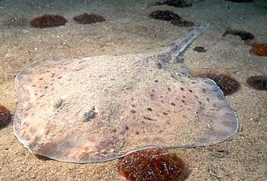
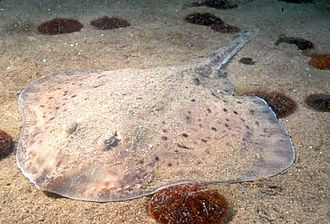

鰩魚
鰩形目又名魮鮶目，是一群身體渾圓的軟骨魚，屬於板鰓類。在型態上和鯊魚很接近，尤其和鼠鯊目更接近，因此和鯊同屬於一類，鰩一般在海中棲息，濾食浮游生物，口和鰓裂都是腹位，只有少數種類是在在淡水中生活或底棲，胸鰭大，臀鰭消失，以浮游生物和甲殼類為食物，體形差異相當大，大的有幾米長，小的只有幾厘米，也有可以作為寵物飼養的品種。
鰩形目又名魮鮶目，是一群身體渾圓的軟骨魚，屬於板鰓類。在型態上和鯊魚很接近，尤其和鼠鯊目更接近，因此和鯊同屬於一類，鰩一般在海中棲息，濾食浮游生物，口和鰓裂都是腹位，只有少數種類是在在淡水中生活或底棲，胸鰭大，臀鰭消失，以浮游生物和甲殼類為食物，體形差異相當大，大的有幾米長，小的只有幾厘米，也有可以作為寵物飼養的品種。
